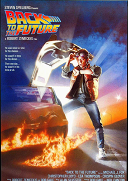
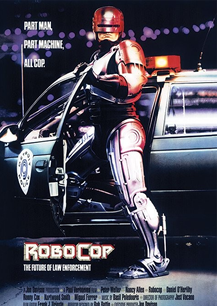

De volta para o Futuro é a franquia que as pessoas mais querem ver de volta no cinema

RoboCop ganhará documentario sobre bastidores de produção

O astro Sylvester Stallone acaba de compartilhar uma foto inédita dos bastidores de Rambo